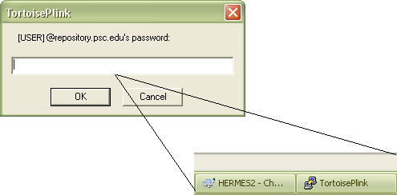

Before you start, what do you need?
You would need:
Here are the instructions, as Jim's put in the "documentation" folder in the SVN, with links.
log in as admin install tortoise svn install python (in c:\python27) add python to path: Right-click "My Computer", and then click "Properties". Click the "Advanced" tab. Click "Environment variables". Under "System variables" select "Path" Click "Edit" In the box "Variable value:" go to the end of the value and append ";C:\Python27" Click "Ok" Click "Ok" Click "Ok" installing python once installer has been executed: In a DOS window (alt, "command prompt", or the black-and-white box accessed by typing in "cmd" under "run" in windows xp), type in the command "cd" until you're in the python directory i.e., If you're on your desktop and trying to get back to c:\python27, first type in "cd ../../" and press the enter key until the directory you're in is "C:/" (every "cd ../" gets you one file name backwards in the directory tree) and then type in "cd python27" and press the enter key -- this should get you in to the python folder Type in "python.exe" and press enter. A Python interpreter should come up, signifying that Python has been installed properly. install simpy: download and extract simpy to desktop (assuming simpy-2.3) open command prompt type "cd desktop\simpy-2.3" type "python setup.py install" log back in as user right click on an empty space on the desktop and click "svn checkout" in "URL of repository" type, replacing the square brackets with your user name: "svn+ssh://[your_user_name]@hermes.psc.edu/repo/vmirep/trunk/HERMES2" (remove "[your_user_name]" from the above if you are sharing the repository) If you get a "PuTTY Security Alert" click "Yes" to "Store key in cache?"
enter your repository password and click "OK"
You may need to enter your password multiple times.
This will take a minute or so. Click "OK" when finished.